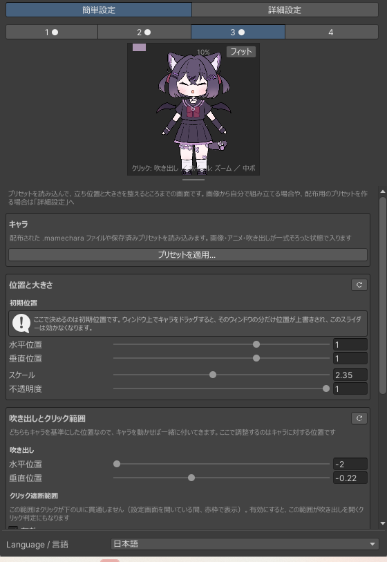
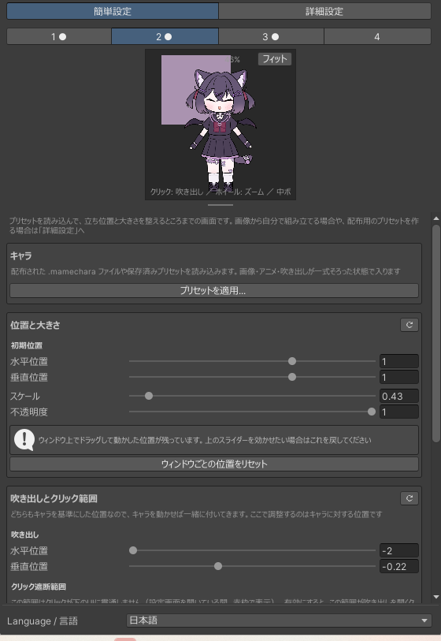
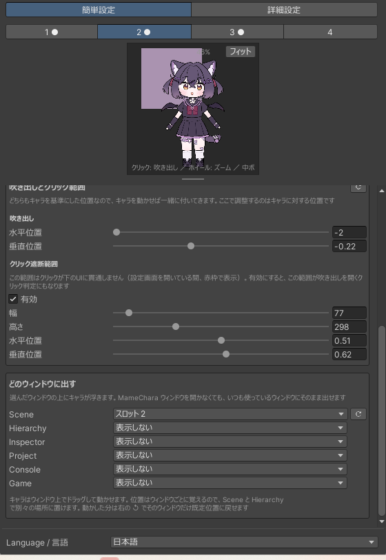
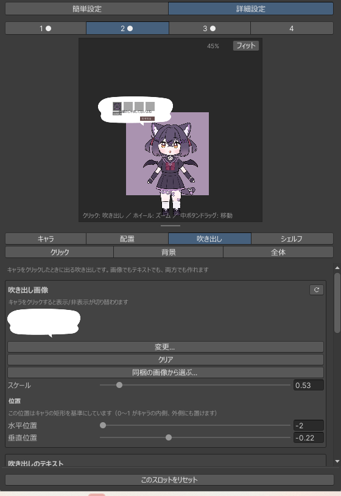

プリセットを使う
配られた.mamecharaファイルには、キャラの画像・アニメ・立ち位置が一式入っています。
作者が同梱していれば吹き出しと背景も一緒に来ます。読み込んで、自分のエディタでの置き場所を
決めれば終わりです。ここは簡単設定だけで完結します。
-
設定ウィンドウを開く
メニューの
MAMEMONO > MameChara > Settings。 初めて開いたときは簡単設定が選ばれています。上の 1 2 3 4 がスロットです。4体まで別々のキャラを持てるので、 空いているスロットを選んでください。番号の横に「●」が付いているスロットには、すでに中身が入っています。
-
プリセットを適用する
キャラのプリセットを適用...を押します。 配られた
.mamecharaファイルを選ぶか、このプロジェクトに保存済みのプリセットを選びます。画像・アニメ・吹き出しが一式そろった状態でスロットに入ります。 プレビューにキャラが出れば読み込めています。
上書きされる範囲プリセットには「何を含むか」が記録されています。キャラは必ず入っていますが、 吹き出しと背景は作者が選んだ場合だけ入っています。 含まれていない部分は上書きされません——キャラだけのプリセットを適用しても、自分で設定した吹き出しや背景はそのまま残ります。

簡単設定の一番上。ここから読み込みます。 -
立ち位置と大きさを決める
位置と大きさのスライダーで、水平位置・垂直位置・スケール・不透明度を合わせます。
位置は 0〜1 がウィンドウの内側です。範囲の外に出せば、キャラが画面の端から 半分だけのぞく置き方もできます。
これは「初期位置」ですここで決めるのはまだ動かしていないウィンドウでの位置です。 キャラはウィンドウ上で直接ドラッグして動かせます。そしてドラッグで動かすと、 そのウィンドウの位置だけがここより優先されます。
つまり Hierarchy でキャラを動かしたあとにこのスライダーを触っても、Hierarchy のキャラは動きません。 戻したいときはウィンドウごとの位置をリセットを押してください。
この仕組みのおかげで、同じスロットのキャラを「Scene ビューでは左上、Hierarchy では下端から はみ出させる」といった具合に、ウィンドウごとに別の置き方ができます。

ドラッグで動かした位置が残っているときは、スライダーの下にその案内とリセットが出ます。 -
吹き出しとクリック範囲の位置を合わせる
吹き出しの中身（画像やセリフ）はプリセットが持っていますが、 どこに出るかはキャラの立ち位置に対する相対位置なので、こちらで調整します。 キャラを動かせば吹き出しも一緒に付いてきます。
クリック遮断範囲は、キャラの周りでクリックを受け止める四角です。 これがないと、キャラを押したつもりのクリックが下の Hierarchy や Project に通ってしまいます。 逆に広すぎると、キャラの近くにある本来のUIが押せなくなります。
範囲を決めるときは、クリックタブで赤枠の表示を入れると見ながら合わせられます。

簡単設定を下までスクロールすると、吹き出しとクリック範囲、そして表示先の一覧があります。 -
どのウィンドウに出すかを選ぶ
どのウィンドウに出すで、ウィンドウごとにどのスロットを出すかを決めます。 表示しないを選べばそのウィンドウには出ません。
浮かせられるウィンドウ Scene シーンビューの上 Hierarchy 階層ウィンドウの上 Inspector インスペクタの上 Project プロジェクトウィンドウの上 Console コンソールの上 Game ゲームビューの上 これらの上に描くときは背景を一切塗らないので、キャラだけがそこに浮いて見えます。 行末に↺が出ている行は、そのウィンドウでドラッグして動かした位置が残っている行です。 押すとその1つだけを消せます。
キャラに専用の場所を与えたい場合は
MAMEMONO > MameChara > MameCharaで 独立したウィンドウが開きます。こちらはドッキングでき、背景に色や画像を敷けます。 -
クリックしてみる
キャラをクリックすると吹き出しが開き、その中にミニシェルフが並びます。 もう一度クリックすると閉じます。
ミニシェルフはアセットの一時置き場です。4枠あり、 アセットをドラッグして置くとキャラが覚えてくれます。そこから Scene へドラッグして戻すこともできますし、 わすれるで消せます。
吹き出しに入るセリフは、なぜ出たかで変わります。 クリックしたとき、シーンを保存したとき、コンパイルが終わったとき、Play を始めたとき、 そして何もしていないときの独り言。作者がそれぞれに書いていれば、場面に合ったことを言います。

クリックで開いた吹き出しとミニシェルフ。設定ウィンドウのプレビューでも同じ動きが確認できます。
{kind=link}
{kind=link}
{kind=link}
{kind=link}